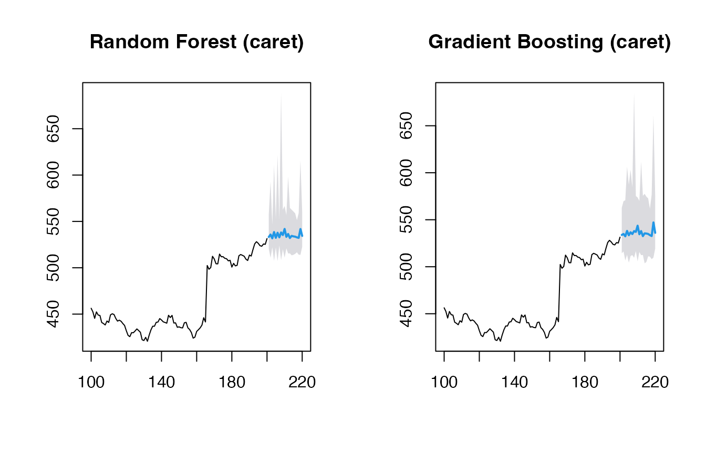
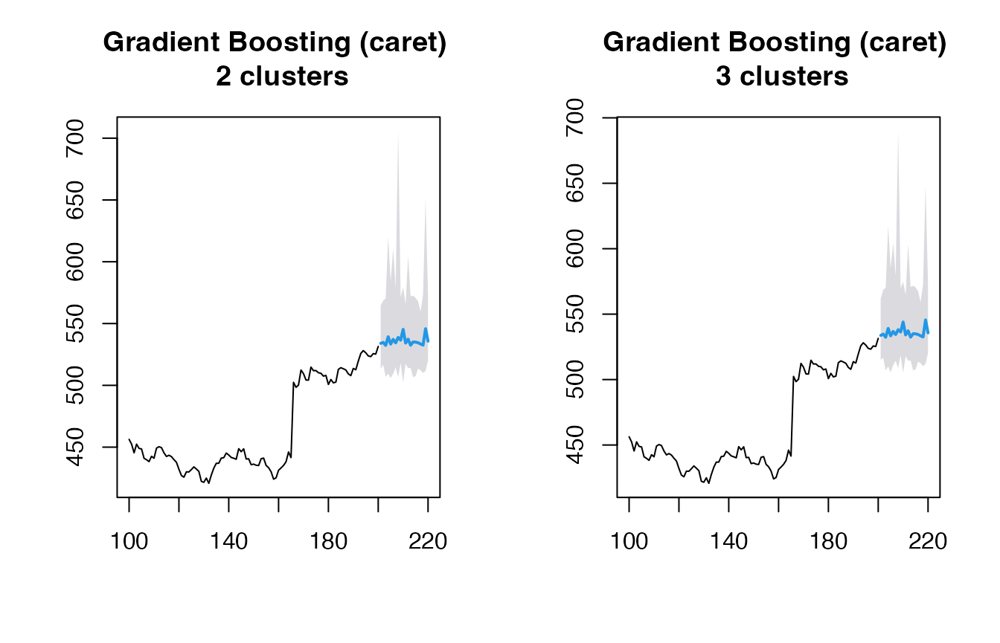
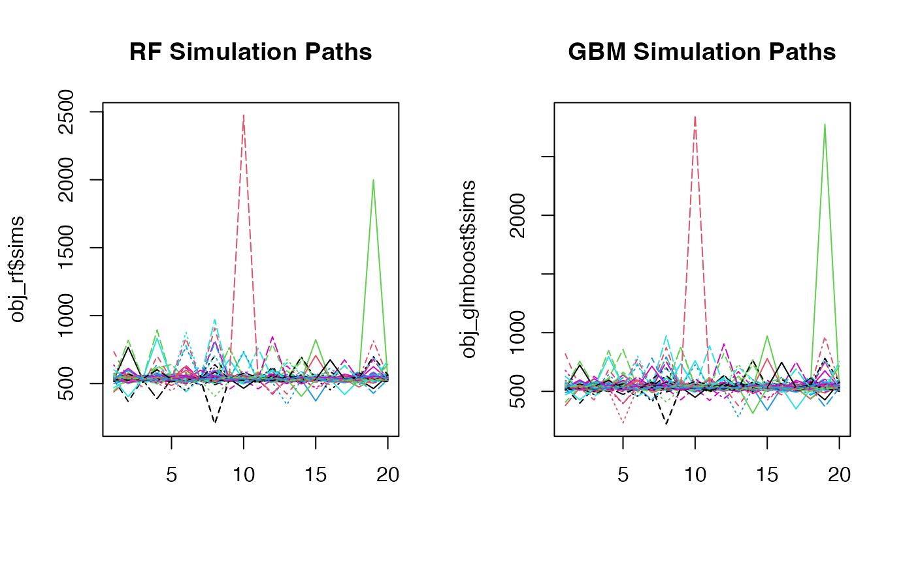
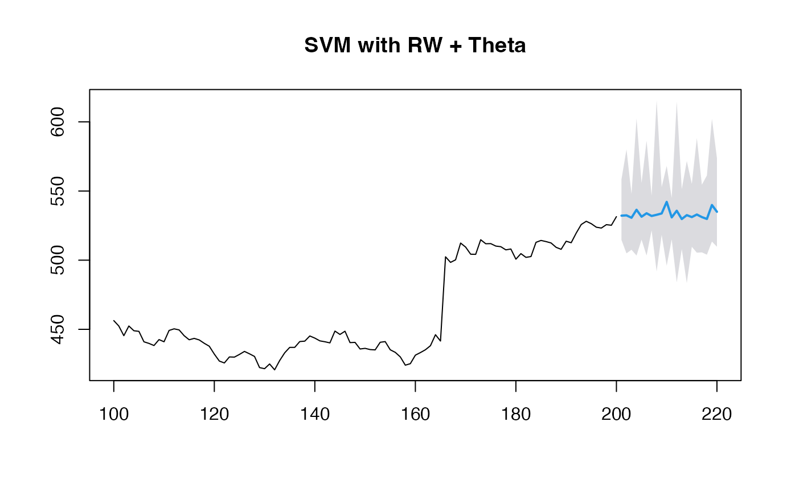

Beyond GARCH
mlarch.RmdIntroduction
Probabilistic stock forecasting often relies on parametric models
like ARIMA for the mean and GARCH for volatility. The
mlarchf function in the ahead package offers a
flexible hybrid alternative to ARMA-GARCH by combining machine learning
approaches with ARCH effects.
The model decomposes the time series into two components:
- Mean component:
- Volatility component:
where:
- is the conditional mean (modeled using any forecasting method)
- is the conditional volatility (modeled using machine learning)
- are standardized residuals
The key innovation is using machine learning methods
and conformal prediction to model the volatility component, allowing for
more flexible and potentially more accurate volatility forecasts than
traditional GARCH models. The function supports various machine learning
methods through parameters fit_func and
predict_func as in other ahead models, and
through the caret package.
The forecasting process involves:
- Fitting a mean model (default:
auto.arima) - Modeling the squared residuals using machine learning. For this to work, the residuals from the mean model need to be centered, so that
(basically a supervised regression of squared residuals on their lags) is a good approximation of the latent conditional volatility
- Conformalizing the standardized residuals for prediction intervals
This new approach combines the interpretability of traditional time series models with the flexibility of machine learning, while maintaining proper uncertainty quantification through conformal prediction.
Basic Usage
Let’s start with a simple example using the Google stock price data
from the fpp2 package:
y <- fpp2::goog200
# Default model for volatility (Ridge regression for volatility)
(obj_ridge <- ahead::mlarchf(y, h=20L, B=500L))## Point Forecast Lo 95 Hi 95
## 201 534.4214 513.0126 549.3933
## 202 536.2434 516.2732 554.8150
## 203 536.4303 521.4628 553.5272
## 204 536.6375 516.4954 559.5297
## 205 536.9744 513.3218 555.6087
## 206 536.8669 518.1739 552.4974
## 207 539.0674 519.1329 558.1132
## 208 537.4618 501.6436 560.6395
## 209 540.1076 518.9179 558.1104
## 210 536.5789 509.1344 555.3092
## 211 540.7064 517.4373 555.1692
## 212 543.6837 528.5274 561.0367
## 213 543.4614 524.3126 564.4024
## 214 544.3046 526.8852 564.2636
## 215 544.1797 522.0492 560.9355
## 216 544.7224 525.9826 560.9314
## 217 545.7186 524.2705 564.2966
## 218 546.5558 524.4960 568.5002
## 219 546.0634 527.0138 562.9881
## 220 548.5014 525.1081 567.3897Different Machine Learning Methods
The package supports various machine learning methods for volatility modeling. Here are some examples:
# Random Forest
(obj_rf <- ahead::mlarchf(y, fit_func = randomForest::randomForest,
predict_func = predict, h=20L, B=500L))## Point Forecast Lo 95 Hi 95
## 201 534.1512 510.3324 552.3963
## 202 536.2532 513.0656 559.3006
## 203 535.9461 519.9620 552.2986
## 204 537.0154 510.5593 566.3488
## 205 536.6587 511.9640 557.5270
## 206 536.8918 511.8123 557.0593
## 207 538.5116 516.4982 559.0598
## 208 537.6690 500.2783 558.3135
## 209 539.8688 513.5599 560.6459
## 210 537.2253 509.0348 559.8301
## 211 540.5074 518.2870 556.2040
## 212 543.2205 524.8324 565.9389
## 213 542.9070 520.6425 563.8805
## 214 544.3180 522.2758 568.1577
## 215 543.7810 521.8650 560.4342
## 216 544.6455 525.4243 562.8774
## 217 545.5607 520.4664 565.2332
## 218 546.2067 522.8465 571.9418
## 219 545.8613 526.1130 562.6742
## 220 548.4096 527.0026 569.4774
# Support Vector Machine
(obj_svm <- ahead::mlarchf(y, fit_func = e1071::svm,
predict_func = predict, h=20L, B=500L))## Point Forecast Lo 95 Hi 95
## 201 533.7170 517.3170 544.6631
## 202 534.6215 524.3793 544.5595
## 203 536.5179 520.7747 553.2203
## 204 536.5351 517.2433 558.2349
## 205 536.8402 515.4246 554.3359
## 206 536.7315 520.3277 550.1107
## 207 538.3551 522.7912 553.1115
## 208 537.7272 487.5047 570.7947
## 209 539.5938 523.3432 554.6829
## 210 537.3854 520.4736 549.0138
## 211 540.6617 518.7450 556.5441
## 212 543.1811 530.3252 560.4024
## 213 542.8325 525.8313 560.2181
## 214 543.1528 531.3217 555.5522
## 215 543.6781 526.0638 556.7800
## 216 544.9585 524.4062 564.1614
## 217 545.0948 529.2871 558.7188
## 218 545.6335 530.3653 560.2707
## 219 546.0660 526.8957 563.5162
## 220 548.2219 527.1229 565.0835
# Elastic Net
(obj_glmnet <- ahead::mlarchf(y, fit_func = glmnet::cv.glmnet,
predict_func = predict, h=20L, B=500L))## Point Forecast Lo 95 Hi 95
## 201 534.7928 510.4350 551.7094
## 202 536.3282 515.8595 555.3620
## 203 536.6786 520.3420 555.3749
## 204 536.2580 517.9287 555.7452
## 205 537.1529 511.5610 557.0738
## 206 536.9223 517.4544 553.2179
## 207 539.0651 520.2480 558.3500
## 208 537.4080 504.0407 558.9956
## 209 540.0442 519.4301 557.5566
## 210 536.4339 506.9348 556.5256
## 211 540.6602 517.7029 554.8026
## 212 543.6814 528.5776 560.8094
## 213 543.4691 524.3082 564.4681
## 214 544.3872 527.1408 564.8278
## 215 544.1525 521.6824 560.8221
## 216 544.7067 525.9955 561.3552
## 217 545.7233 524.1913 564.3838
## 218 546.5761 523.1143 568.8639
## 219 546.0707 526.9582 563.1625
## 220 548.4857 525.2693 567.3683Let’s visualize the forecasts:

Using caret Models
The package also supports models from the caret package,
which provides access to hundreds of machine learning methods. Here’s
how to use them:
y <- window(fpp2::goog200, start=100)
# Random Forest via caret
(obj_rf <- ahead::mlarchf(y, ml_method="ranger", h=20L))## Point Forecast Lo 95 Hi 95
## 201 531.9962 519.6288 542.0442
## 202 533.5966 501.3078 567.1908
## 203 532.3779 515.7682 541.3345
## 204 533.2071 499.3026 555.6130
## 205 532.4515 522.4715 541.8420
## 206 530.9037 499.3297 554.6568
## 207 532.8339 523.5267 540.7952
## 208 535.0550 492.9833 575.9206
## 209 532.7999 514.8486 548.6330
## 210 532.0662 509.0840 547.3646
## 211 532.9558 520.1173 545.3782
## 212 534.4784 518.5097 561.1701
## 213 533.4831 514.4327 550.3137
## 214 531.6962 507.7971 544.7853
## 215 532.0200 514.4460 546.2595
## 216 532.7877 519.3994 543.1369
## 217 533.7333 519.4345 545.4001
## 218 532.5218 518.5863 545.3066
## 219 532.5714 515.5647 548.8354
## 220 532.3071 512.3712 547.3188
# Gradient Boosting via caret
(obj_glmboost <- ahead::mlarchf(y, ml_method="glmboost", h=20L))## Point Forecast Lo 95 Hi 95
## 201 532.1232 515.6045 546.6549
## 202 533.0962 506.5413 559.6886
## 203 533.8033 490.7712 558.3938
## 204 532.8558 502.4099 553.7752
## 205 534.3695 505.3856 563.0579
## 206 530.9396 506.2500 550.3506
## 207 534.9237 510.1448 555.6755
## 208 534.8340 494.8246 572.1718
## 209 533.2415 507.1893 555.7273
## 210 532.0511 504.8738 550.3687
## 211 533.6957 516.0999 552.7027
## 212 534.8749 515.1305 564.9202
## 213 534.0364 507.5508 556.0636
## 214 531.7777 495.7765 551.1185
## 215 532.2214 508.2610 552.0268
## 216 533.4324 514.2235 549.0329
## 217 534.8546 512.1173 551.4156
## 218 533.2181 509.9089 554.2609
## 219 533.0263 508.3742 557.0509
## 220 532.7730 505.0416 557.1151
# Gradient Boosting via caret and using clustering explicitly
(obj_glmboost2 <- ahead::mlarchf(y, ml_method="glmboost", n_clusters=2, h=20L))## Point Forecast Lo 95 Hi 95
## 201 532.1621 514.6453 547.5720
## 202 533.0470 507.2998 558.8306
## 203 533.7865 491.0647 558.1997
## 204 533.1064 497.1227 557.8308
## 205 534.2077 506.8464 561.2900
## 206 530.8846 503.6745 552.2772
## 207 534.5441 512.4951 553.0098
## 208 535.2795 489.9581 577.5747
## 209 533.0794 509.4218 553.4985
## 210 532.1277 501.3159 552.8949
## 211 533.4410 517.8666 550.2643
## 212 534.5712 516.5925 561.9293
## 213 533.8342 509.4415 554.1208
## 214 531.7457 499.5986 549.0159
## 215 532.1561 510.3004 550.2219
## 216 533.2083 516.2028 547.0191
## 217 534.6233 513.4436 550.0499
## 218 533.0719 511.7212 552.3466
## 219 532.8965 510.3113 554.9069
## 220 532.6787 506.9663 555.2486
(obj_glmboost3 <- ahead::mlarchf(y, ml_method="glmboost", n_clusters=3, h=20L))## Point Forecast Lo 95 Hi 95
## 201 532.1033 516.0923 546.1886
## 202 533.0416 507.3835 558.7359
## 203 533.7744 491.2756 558.0603
## 204 533.0548 498.2120 556.9952
## 205 534.2518 506.4483 561.7718
## 206 530.9297 505.7850 550.6984
## 207 534.5671 512.3527 553.1713
## 208 534.9336 493.7363 573.3800
## 209 533.0175 510.2750 552.6467
## 210 532.0657 504.1946 550.8510
## 211 533.3837 518.2637 549.7163
## 212 534.5108 516.8830 561.3350
## 213 533.7617 510.1196 553.4242
## 214 531.7399 500.2805 548.6408
## 215 532.1503 510.4822 550.0609
## 216 533.1919 516.3476 546.8718
## 217 534.5654 513.7757 549.7078
## 218 533.0520 511.9678 552.0861
## 219 532.8724 510.6714 554.5082
## 220 532.6660 507.2260 554.9967Visualizing the forecasts:
par(mfrow=c(1, 2))
plot(obj_rf, main="Random Forest (caret)")
plot(obj_glmboost, main="Gradient Boosting (caret)")
par(mfrow=c(1, 2))
plot(obj_glmboost2, main="Gradient Boosting (caret) \n 2 clusters")
plot(obj_glmboost3, main="Gradient Boosting (caret) \n 3 clusters")
Looking at the simulation paths:
par(mfrow=c(1, 2))
matplot(obj_rf$sims, type='l', main="RF Simulation Paths")
matplot(obj_glmboost$sims, type='l', main="GBM Simulation Paths")
Customizing Mean and Residual Models
You can also customize both the mean forecasting model and the model for forecasting standardized residuals:
# Using RW + Theta method for mean and residuals along with SVM for volatility
(obj_svm <- ahead::mlarchf(y, fit_func = e1071::svm,
predict_func = predict, h=20L,
mean_model=forecast::rwf,
model_residuals=forecast::thetaf))## Point Forecast Lo 95 Hi 95
## 201 534.5275 525.6794 550.5503
## 202 539.9297 511.3076 586.5338
## 203 535.6107 520.6631 553.3606
## 204 539.8380 511.2234 574.8781
## 205 535.3418 526.2796 551.4300
## 206 536.4786 518.2886 560.0783
## 207 534.7621 527.1816 544.1724
## 208 541.9045 513.7523 607.6621
## 209 535.7972 525.7187 552.7226
## 210 538.3410 514.6493 565.7574
## 211 536.4844 526.9339 556.1342
## 212 544.0718 521.0150 594.9118
## 213 537.7204 522.5539 564.8411
## 214 540.7948 516.5959 584.6435
## 215 535.7706 523.0148 557.4264
## 216 540.2827 522.6870 577.0492
## 217 538.8013 526.4015 565.2776
## 218 539.9638 523.7616 572.1950
## 219 538.6039 527.1762 570.1166
## 220 541.1636 518.1337 592.9968
# Using Theta + Theta method for mean and residuals along with GLMNET for volatility
(obj_glmnet <- ahead::mlarchf(y, fit_func = glmnet::cv.glmnet,
predict_func = predict, h=20L,
mean_model=forecast::thetaf,
model_residuals=forecast::thetaf))## Point Forecast Lo 95 Hi 95
## 201 536.9599 520.8207 560.6615
## 202 537.7893 520.1798 566.0057
## 203 539.5527 515.5745 574.9838
## 204 538.1037 523.1747 555.6820
## 205 540.3120 524.2845 565.2594
## 206 539.2865 523.2293 566.6387
## 207 541.9672 526.7464 562.5389
## 208 543.3955 522.6309 605.3702
## 209 542.8862 523.6645 569.4162
## 210 541.8687 526.0819 562.2838
## 211 544.3955 530.7274 580.4541
## 212 545.3069 532.5605 578.1298
## 213 545.5162 528.4423 578.4759
## 214 545.9000 527.6103 588.7563
## 215 544.7800 527.1494 571.4776
## 216 545.6953 531.3418 565.1566
## 217 548.4279 534.1135 575.3197
## 218 547.0435 533.7407 573.0924
## 219 549.6855 533.0437 595.3706
## 220 548.4694 533.1184 581.8005
plot(obj_svm, main="SVM with RW + Theta")
plot(obj_glmnet, main="Elastic Net with Theta + Theta")When using non-ARIMA models for the mean forecast, it’s important to check if the residuals of the mean forecasting model are centered and stationary:
# Diagnostic tests for residuals
print(obj_svm$resids_t_test)##
## One Sample t-test
##
## data: resids
## t = 1.0148, df = 99, p-value = 0.3127
## alternative hypothesis: true mean is not equal to 0
## 95 percent confidence interval:
## -0.7180739 2.2214961
## sample estimates:
## mean of x
## 0.7517111
print(obj_svm$resids_kpss_test)##
## KPSS Test for Level Stationarity
##
## data: resids
## KPSS Level = 0.25344, Truncation lag parameter = 4, p-value = 0.1
print(obj_glmnet$resids_t_test)##
## One Sample t-test
##
## data: resids
## t = 1.0992, df = 100, p-value = 0.2743
## alternative hypothesis: true mean is not equal to 0
## 95 percent confidence interval:
## -0.6460748 2.2513707
## sample estimates:
## mean of x
## 0.8026479
print(obj_glmnet$resids_kpss_test)##
## KPSS Test for Level Stationarity
##
## data: resids
## KPSS Level = 0.26089, Truncation lag parameter = 4, p-value = 0.1